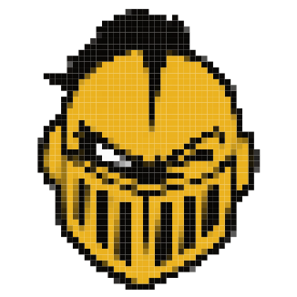
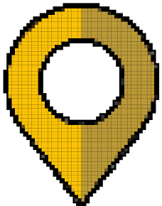
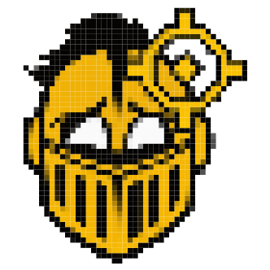

KNIGHTRO
TRACKER

KNIGHTRO HQ
TRACKER MENU
CAMPUS
EXPLORE
Campus events
Likely Knightro appearances
Leaderboard
Top Knight spotters
YOUR KNIGHT
My photo reports
Status and points
Sign in / create account
UCF email · no password
ADMIN
⚙
Admin Mode
Off · tools hidden
⛨
Admin panel
Testing and moderation
RETRY
DAILY BOUNTIES
KNIGHT-SENSE

REPORT SIGHTING

RECENT